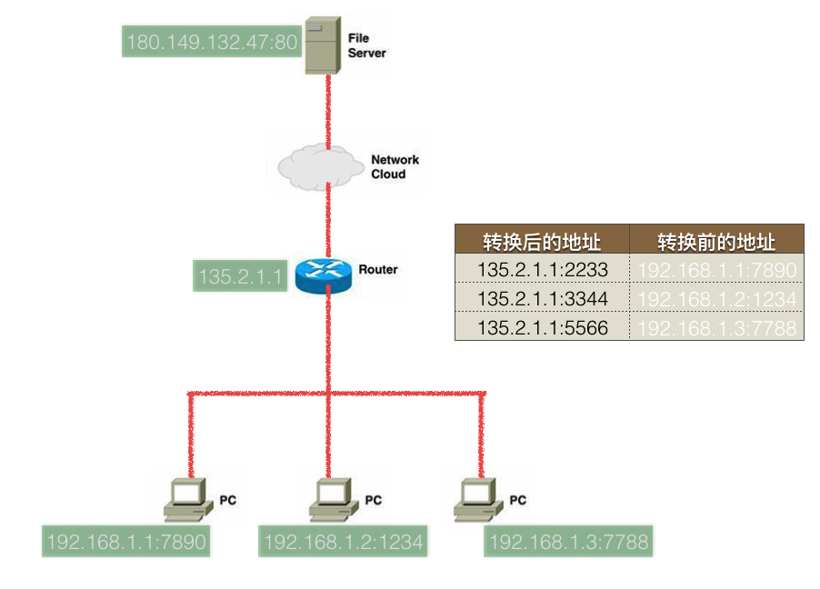

NAT(网络地址转换器)

说明
当在家里用宽带链接上网时，会把电话线(今天很多地方都是光纤)---->调制解调制(简称猫)------->电脑等设备
电脑会得到来自电信服务商的一个公网ip地址（切记只有公网ip地址才能上网），此时可以直接上网happy...
为了能够让多台设备都可以上网，需要将数据进行“分流” 电话线(今天很多地方都是光纤)---->调制解调制(简称猫)------->路由器------>电脑等设备
此时路由器的一端有一个公网ip地址，剩下的可以接入电脑等设备并且它们的ip是私有ip(例如 192.168.1.2)
当一个电脑（192.168.1.2）上网时，先通过DNS协议解析出某个域名对应的ip，然后
- 发送数据时,在经过路由器时转换为公网ip以及路由器自己分配的临时端口
192.168.1.2:6789----->192.168.1.1 路由器 116.226.52.212:6539------->猫---->万维网
- 接收数据时,在经过路由器时转换为路由器之前记录的ip以及port
万维网------->猫----->116.226.52.212:6539 路由器 192.168.1.1 ---->192.168